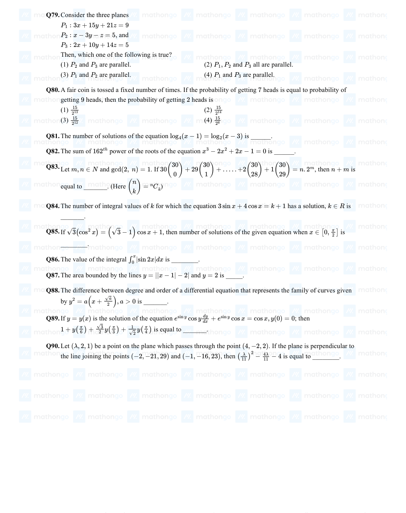

If 𝑦= 𝑦( 𝑥) is the solution curve of the differential equation 𝑥2 d𝑦+ 𝑦- 1 𝑥d𝑥= 0; 𝑥> 0 and 𝑦( 1 ) = 1, then 𝑦 1 is equal to : 2
(A)3 + e
(B)3 - e
(C)3 - 1
(D)3 + 1 2 √e √e
Answer: B
Q2MATH-2021-0101-S2-Q0762021 | 16 Mar | Shift 2—MCQ
Let C1 be the curve obtained by the solution of differential equation 2xy dx = y2 −x2, x > 0 . Let the curve C2 be the solution of 2xy = dy . If both the curves pass through (1, 1), then the area (in sq. units) enclosed x2−y2 dx by the curves C1 and C2 is equal to :
(A)π −1
(B)π −1
(D)π 2 π + 1 4 + 1
Answer: B
Q3MATH-2021-0101-S1-Q0772021 | 17 Mar | Shift 1—MCQ
Which of the following is true for y(x) that satisfies the differential equation dy = xy −1 + x −y; y(0) = 0 dx e−1 1 −e−1
(A)y
(B)= 2 −1
(C)y
(D)= e 2 2
Answer: A
Q4MATH-2021-0101-S1-Q0792021 | 18 Mar | Shift 1—MCQ
The differential equation satisfied by the system of parabolas y2 = 4a(x + a) is
(A)2
(B)2 y( dy ) −2x( dy ) −y = 0 y( dy ) −2x( dy ) + y = 0 dx dx dx dx
(C)y( dy ) 2 + 2x( dy ) −y = 0
(D)y( dy ) + 2x( dy ) −y = 0 dx dx dx dx
Answer: C
Q5MATH-2021-0101-S2-Q0772021 | 18 Mar | Shift 2—MCQ
Let y = y(x) be the solution of the differential equation dy = (y + 1)((y + 1)ex2/2 −x), 0 < x < 2. 1 , with dx y
(A)= 0 . Then the value of dy at x = 1 is equal to −e3/2 dx 2e2
Let y = y(x) be the solution of the differential equation x tan( y )dy = (y tan( y ) −x)dx , 1 π x x 1 −1 ≤x ≤1, y( 2 ) = 6 . Then the area of the region bounded by the curves x = 0, x = √2 and y = y(x) in the upper half plane is:
Let a curve y = y(x) be given by the solution of the differential equation 1 (√e2x −1)dy cos( 2 cos−1(e−x))dx = . If it intersects y -axis at y = −1 , and the intersection point of the curve with x− axis is (α, 0) , then eα is equal to
Let y = y(x) be the solution of the differential equation cosec2 xdy + 2dx = (1 + y cos 2x) cosec2 xdx, with y( π ) = 0. Then, the value of (y(0) + 1)2 is equal to: 4
Let y = y(x) be the solution of the differential equation ((x 2)e( y+1 ) 1))dx + x+2 + (y + = (x + 2)dy, y(1) = 1. If the domain of y = y(x) is an open interval (α, β), then |α + β| is equal to ___________.
Enter your answer
Answer: 4
Q11MATH-2021-0101-S1-Q0772021 | 24 Feb | Shift 1—MCQ
The population 𝑃= 𝑃𝑡 at time 𝑡 of a certain species follows the differential equation 𝑑𝑃 𝑑𝑡= 0 . 5𝑃- 450. If 𝑃0 = 850, then the time at which population becomes zero is:
(B)log𝑒9 2log𝑒18
(C)log𝑒18
(D)1 2log𝑒18 𝑥- 3 𝑦- 4 𝑧- 5
Answer: B
Q12MATH-2021-0101-S2-Q0882021 | 25 Feb | Shift 2—Integer
If the curve, y = y(x) represented by the solution of the differential equation (2xy2 −y)dx + x dy = 0 , passes through the intersection of the lines, 2x −3y = 1 and 3x + 2y = 8 , then |y(1)| is equal to ___ .
Let 𝑦= 𝑦( 𝑥) be the solution of the differential equation 𝑑𝑦 𝑑𝑥= 1 + 𝑥𝑒𝑦- 𝑥, - √2 < 𝑥< √2, 𝑦0 = 0 , then the minimum value of 𝑦𝑥, 𝑥∈-√2, √2 is equal to :
Let = y(x) be the solution of the differential equation = (y + x3 cos x)dx with y(π) = 0, then y( π ) is y xdy 2 equal to: π2 π2
(A)4 + π 2
(B)2 + π 4
(C)π2 −π
(D)π2 −π 2 4 4 2
Answer: A
Q15MATH-2021-0101-S1-Q0772021 | 26 Aug | Shift 1—MCQ
Let y = y(x) be a solution curve of the differential equation (y + 1) tan2 xdx + tan xdy + ydx = 0 , x ∈(0, π ) . If lim xy(x) = 1 , then the value of y( π ) is: 2 x→0+ 4
(A)π + 1
(B)π −1 4 4
(C)π
(D)−π 4 4
Answer: C
Q16MATH-2021-0101-S2-Q0772021 | 26 Aug | Shift 2—MCQ
Let y(x) be the solution of the differential equation 2x2 dy + (ey −2x)dx = 0, x > 0. If y(e) = 1, then y
(A)is equal to:
(B)loge(2e)
(C)loge 2
(D)2
Answer: B
Q17MATH-2021-0101-S1-Q0882021 | 26 Feb | Shift 1—Integer
The difference between degree and order of a differential equation that represents the family of curves given by y2 = a(x + √a ), a > 0 is _______. 2

Enter your answer
Answer: 2
Q18MATH-2021-0101-S2-Q0762021 | 27 Aug | Shift 2—MCQ
If the solution curve of the differential equation (2x −10y3)dy + ydx = 0 , passes through the points (0, 1) and (2, β) , then β is a root of the equation?
Let y = y(x) be solution of the differential equation loge( dy ) = 3x + 4y, with y(0) = 0 . If dx y(−2 loge 2) = α loge 2 , then the value of α is equal to: 3
If y = y(x), y ∈[0, π 2 ) is the solution of the differential equation sec y dx −sin(x + y) −sin(x −y) = 0, with y(0) = 0 , then 5y′( π ) is equal to _____. 2 → → →
Let be the solution of the differential equation eαx+ydx; If and y = y(x) dy = α ∈N. y(loge 2) = loge 2 y(0) = loge( 1 ), then the value of α is equal to ___. 2
Enter your answer
Answer: 2
Q23MATH-2022-0101-S1-Q0772022 | 24 Jun | Shift 1—MCQ
If is the solution of the differential equation dx y3(y 1)ey, ; then is equal x = x(y) y dy = 2x + + x
(A)= 0 x(e) to
(B)ee(e3 −1)
(C)e3(ee −1)
(D)ee −1
Answer: B
Q24MATH-2022-0101-S1-Q0772022 | 25 Jun | Shift 1—MCQ
If the solution curve 𝑦= 𝑦𝑥 of the differential equation 𝑦2 d𝑥+ 𝑥2 - 𝑥𝑦+ 𝑦2d𝑦= 0, which passes through the point and intersects the line at the point √3𝛼, then value of is equal to 1, 1 𝑦= √3𝑥 𝛼, log𝑒√3𝛼
(A)𝜋
(B)𝜋 2 4
(C)𝜋
(D)𝜋 6 12
Answer: D
Q25MATH-2022-0101-S2-Q0782022 | 25 Jun | Shift 2—MCQ
If 𝑦= 𝑦𝑥 is the solution of the differential equation 𝑑𝑥- 2𝑥𝑦+ 3𝑦2 = 0 such that 𝑦𝑒= 3, then 𝑦1 is equal to
(A)1
(B)2 3 3
(C)3
(D)3 2 →𝑟· ^𝑖+ ^𝑗- ^𝑘= →𝑟· ^𝑖- ^𝑗+ ^𝑘=
Answer: B
Q26MATH-2022-0101-S1-Q0892022 | 26 Jun | Shift 1—Integer
Let the solution curve y = y(x) of the differential equation (4 + x2)dy −2x(x2 + 3y + 4)dx = 0 pass through the origin. Then y(2) is equal to _____.
Enter your answer
Answer: 12
Q27MATH-2022-0101-S1-Q0902022 | 26 Jun | Shift 1—Integer
Let −{ π 3π 3π 7π } . Let , , be the solution curve of the differential equation S = (0, 2π) 2 , 4 , 2 , 4 y = y(x) x ∈S dy = 1 , y( π ) = 1 . If the sum of abscissas of all the points of intersection of the curve y = y(x) with dx 1+sin 2x 4 2 the curve y = √2 sin x is kπ 12 , then k is equal to _____.
Enter your answer
Answer: 42
Q28MATH-2022-0101-S2-Q0762022 | 26 Jun | Shift 2—MCQ
If y = y(x) is the solution of the differential equation x dx + 2y = xex, y
(A)= 0 then the local maximum value of the function z(x) = x2y(x) −ex, x ∈R is
(B)1 −e
(C)0
(D)1
Answer: D
Q29MATH-2022-0101-S2-Q0762022 | 27 Jun | Shift 2—MCQ
If the solution curve of the differential equation ((tan−1 y) −x)dy = (1 + y2)dx passes through the point (1, 0) then the abscissa of the point on the curve whose ordinate is tan
(A)is
(B)2
(C)2 e
(D)3
Answer: B
Q30MATH-2022-0101-S1-Q0752022 | 28 Jun | Shift 1—MCQ
Let the solution curve y = y(x) of the differential equation, [ x + e x y ]x dy = x + [ x + e x y ]y pass √x2−y2 dx √x2−y2 through the points (1, 0) and (2α, α), α > 0 . Then α is equal to
(A)2 1 exp( π 6 + √e −1)
(B)1 2 exp( π 3 + √e −1)
(C)exp( π + √e + 1)
(D)2 exp( π + √e −1) 6 3
Answer: A
Q31MATH-2022-0101-S1-Q0762022 | 28 Jun | Shift 1—MCQ
Let y = y(x) be the solution of the differential equation x(1 −x2) dy + (3x2y −y −4x3) = 0, x > 1 with . Then is equal to dx y
(A)= −2 y
(C)−18
(D)−12
Answer: A
Q32MATH-2022-0101-S2-Q0762022 | 28 Jun | Shift 2—MCQ
Let x = x(y) be the solution of the differential equation 2ye y2 x dx + (y2 −4xe y2 x )dy = 0 such that x
(A)= 0 . Then, x(e) is equal to
(B)e loge
(D)−e loge
Answer: D
Q33MATH-2022-0101-S1-Q0782022 | 29 Jun | Shift 1—MCQ
Let dy √y2 the solution curve of the differential equation x dx −y = + 16x2, y
(A)= 3 be y = y(x) . Then y
(B)is equal to
(C)15
(D)11
Answer: A
Q34MATH-2022-0101-S2-Q0762022 | 29 Jun | Shift 2—MCQ
If y = y(x) is the solution of the differential equation (1 + e2x) dy + 2(1 + y2)ex = 0 and y(0) = 0 , then 6(y′(0) 2 ) dx + (y(logc √3)) is equal to:
(A)2
(B)−2
(C)−4
(D)−1
Answer: C
Q35MATH-2022-0101-S2-Q0892022 | 29 Jun | Shift 2—Integer
Let y = y(x), x > 1 , be the solution of the differential equation (x −1) dy + 2xy = 1 , with y(2) = 1+e4 . eα+1 dx x−1 2e4 If y(3) = βeα . then the value of α + β is equal to ______.
Enter your answer
Answer: 14
Q36MATH-2023-0101-S1-Q0762023 | 01 Feb | Shift 1—MCQ
The area enclosed by the closed curve 𝐶 given by the differential equation 𝑑𝑦 𝑑𝑥+ 𝑥+ 𝑎 = 0, 𝑦1 = 0 is 4𝜋. Let 𝑃 𝑦- 2 and 𝑄 be the points of intersection of the curve 𝐶 and the 𝑦-axis. If normals at 𝑃 and 𝑄 on the curve 𝐶 intersect 𝑥-axis at points 𝑅 and 𝑆 respectively, then the length of the line segment 𝑅𝑆 is
(B)2√3 2√3 3
(C)2
(D)4√3 3
Answer: D
Q37MATH-2023-0101-S1-Q0772023 | 01 Feb | Shift 1—MCQ
If 𝑦= 𝑦𝑥 is the solution curve of the differential equation 𝑑𝑦 𝑑𝑥+ 𝑦tan𝑥= 𝑥sec𝑥, 0 ≤𝑥≤ 𝜋 3, 𝑦0 = 1, then 𝜋 𝑦 6 is equal to
If the solution curve f(x, y) = 0 of the differential equation (1 + loge x) dx −x loge x = ey, x > 0, passes dy through the points (1, 0) and (a, 2) , then aa is equal to (1) e2e2 (2) ee2 (3) e√2e2 (4) e2e√2
If the solution curve of the differential equation (y −2 loge x)dx + (x loge x2)dy = 0, x > 1 passes through the points (e, 4 ) and (e4, α) , then is equal to _______ 3 α
Let be a solution curve of the differential equation, 𝑥2𝑦2𝑑𝑥= 𝑥𝑑𝑦, If the line 𝑦= 𝑦𝑥 1 - 𝑦𝑑𝑥+ 𝑥= 1 intersects the curve 𝑦= 𝑦𝑥 at 𝑦= 2 and the line 𝑥= 2 intersects the curve 𝑦= 𝑦𝑥 at 𝑦= 𝛼, then a value of 𝛼 is
Let be the solution of the differential equation dy 5 (x5+1)2 . If , then y = y(x) dx + x(x5+1) y = x7 , x > 0 y(1) = 2 y(2) is equal to (1) 637 (2) 679 128 128 (3) 128 693 (4) 697 128
Let y = y1(x) and y = y2(x) be the solution curves the differential equation dx = y + 7 with initial conditions y1(0) = 0 and y2(0) = 1 respectively. Then the curves y = y1(x) and y = y2(x) intersect at (1) no point (2) two points (3) one point (4) infinite number of points
If 𝑦= 𝑦( 𝑥) is the solution of the differential equation 𝑑𝑦 𝑑𝑥+ 4𝑥 1𝑦= 𝑥+ 2 , 𝑥> 1 such that 𝑥2 - 𝑥2 - 1 5 2 𝑦(2) = 2 9log𝑒2 + √3 and 𝑦√2 = 𝛼log𝑒√𝛼+ 𝛽+ 𝛽- √𝛾, 𝛼, 𝛽, 𝛾∈ℕ, then 𝛼𝛽𝛾 is equal to
Let = x(y) be the solution of the differential equation x 2(y + 2) loge(y + 2)dx + (x + 4 −2 loge(y + 2))dy = 0 , y > −1 with x(e4 −2) = 1 . Then x(e9 −2) is equal to
(A)3
(B)4
(C)32
(D)10 9 9 3
Answer: C
Q46MATH-2023-0101-S1-Q0752023 | 24 Jan | Shift 1—MCQ
Let be the solution of the differential equation 𝑦 = 𝑦( 𝑥) 𝑥3 𝑑𝑦 + ( 𝑥𝑦 – 1 ) 𝑑𝑥 = 0, 𝑥 > 0, 𝑦 1 = 3 - 𝑒. Then 𝑦1 is equal to 2
(A)1
(B)𝑒
(D)2 - 𝑒 3
Answer: A
Q47MATH-2023-0101-S2-Q0842023 | 24 Jan | Shift 2—Integer
Let y = y(x) be the solution of the differential equation (x2– 3y2)dx + 3 xy dy = 0, y(1) = 1 . Then 6y2(e) is equal to (1) 3e2 (2) e2 3e2 (3) 2e2 (4) 2
Enter your answer
Answer: 122
Q48MATH-2023-0101-S1-Q0842023 | 25 Jan | Shift 1—Integer
Let y = y(x) be the solution curve of the differential equation dy = y (1 + x2(1 + loge x)) , x > 0, y(1) = 3 . y2(x) dx x Then is equal to : 9 x2 x2 (1) 5−2x3(2+loge x3) (2) 2x3(2+loge x3)−3 (3) x2 (4) x2 3x3(1+loge x2)−2 7−3x3(2+loge x2) →a,→b →b (→b ×→c) →b−→c →d
Enter your answer
Answer: 495
Q49MATH-2023-0101-S2-Q0832023 | 25 Jan | Shift 2—Integer
Let y = y(t) be a solution of the differential equation dy dt + αy = γe−βt Where, α > 0, β > 0 and γ > 0 . Then Limt→∞ y(t) (1) is 0 (2) does not exist (3) is 1 (4) is −1
Enter your answer
Answer: 3
Q50MATH-2023-0101-S1-Q0842023 | 29 Jan | Shift 1—Integer
Let y = f(x) be the solution of the differential equation y(x + 1)dx −x2dy = 0, y(1) = e . Then lim x→0+ is equal to (1) 0 (2) 1 e 1 (3) e2 (4) e2
Enter your answer
Answer: 1120
Q51MATH-2023-0101-S2-Q0842023 | 29 Jan | Shift 2—Integer
Let y = y(x) be the solution of the differential equation x loge x dy + y = x2 loge x, (x > 1) . If y(2) = 2 , dx then y(e) is equal to 4+e2 1+e2 (1) 4 (2) 4 (3) 2+e2 (4) 1+e2 2 2 →b ×→b +→b =→0
Enter your answer
Answer: 461
Q52MATH-2023-0101-S1-Q0762023 | 30 Jan | Shift 1—MCQ
Let 𝑑𝑦 3𝑥5tan-1𝑥3 𝑥3 - tan-1𝑥3 the solution curve 𝑦= 𝑦( 𝑥) of the differential equation 𝑑𝑥- 3 𝑦= 2𝑥 exp pass through 1 + 𝑥6 2 √( 1 + 𝑥) 6 the origin. Then is equal to: 𝑦( 1 )
(A)exp4 - 𝜋
(B)exp𝜋- 4 4√2 4√2
(C)exp1 - 𝜋
(D)exp4 + 𝜋 4√2 4√2 → →
Answer: A
Q53MATH-2023-0101-S2-Q0842023 | 30 Jan | Shift 2—Integer
Q54MATH-2023-0101-S2-Q0842023 | 31 Jan | Shift 2—Integer
Let y = y(x) be the solution of the differential equation (3y2 −5x2)ydx + 2x(x2 −y2)dy = 0 such that . Then (y(2))3 is equal to : y(1) = 1 −12y(2) (1) 64 (2) 32√2 (3) 32 (4) 16√2
Enter your answer
Answer: 45
Q55MATH-2024-0101-S1-Q0772024 | 01 Feb | Shift 1—MCQ
Let be the solution of the differential equation 𝑑𝑦 𝑦3 1. Then, 1 𝑦1 2 𝑦= 𝑦𝑥 𝑑𝑥= 2𝑥𝑥+ −𝑥𝑥+ 𝑦−1, 𝑦0 = √2 + √2 equals:
(A)4
(B)3 4 + √𝑒 3 −√𝑒
(C)2
(D)1 1 + √𝑒 2 −√𝑒
Answer: D
Q56MATH-2024-0101-S1-Q0892024 | 01 Feb | Shift 1—Integer
If 𝑥= 𝑥𝑡 is the solution of the differential equation 𝑡+ 1𝑑𝑥= 2𝑥+ 𝑡+ 14𝑑𝑡, 𝑥0 = 2, then 𝑥1 equals ________
If the solution of the differential equation (x4 2x3 3x2 −(2x2 y = y(x) + + + 2x + 2)dy + 2x + 3)dx = 0 satisfies y(−1) = −π , then y(0) is equal to : 4
Let y = y(x) be the solution of the differential equation (x + y + 2)2dx = dy, y(0) = −2 . Let the maximum and minimum values of the function y = y(x) in [0, π ] be α and β , respectively. If π)2 β2 δ√3, ∈Z , then equals 3 ______ (3α + + = γ + γ, δ γ + δ
Let y = y(x) be the solution of the differential equation dy + 2x y = xe (1+x2) ; y(0) = 0. dx (1+x2)2 − 1 Then the area enclosed by the curve f(x) = y(x)e (1+x2) and the line y −x = 4 is__________ y−2
Suppose the solution of the differential equation dy = (2+α)x−βy+2 represents a circle passing through dx βx−2αy−(βγ−4α) origin. Then the radius of this circle is :
Let α|x| = |y|exy−β, α, β ∈N be the solution of the differential equation x dy −y dx + xy(x dy + y dx) = 0 , y(1) = 2 . Then α + β is equal to ________
The solution of the differential equation (x2 + y2)dx −5xy dy = 0, y
(A)= 0 , is : 6 6
(B)x2 −2y2 = x
(C)x2 −4y2 = x
(D)x2 −4y2 5 = x2
Answer: C
Q70MATH-2024-0101-S1-Q0772024 | 27 Jan | Shift 1—MCQ
Let x = x(t) and y = y(t) be solutions of the differential equations dx + ax = 0 and dy + by = 0 dt dt respectively, a, b ∈R . Given that x(0) = 2 ; y(0) = 1 and 3 y
(A)= 2 x
(B), the value of t , for which x(t) = y(t) , is :
(C)log 2 2
(D)log4 3 3
Answer: D
Q71MATH-2024-0101-S1-Q0882024 | 27 Jan | Shift 1—Integer
If the solution of the differential equation (2x + 3y −2)dx + (4x + 6y −7)dy = 0, y(0) = 3 , is αx + βy + 3 loge |2x + 3y −γ| = 6 , then α + 2β + 3γ is equal to ______.
Enter your answer
Answer: 29
Q72MATH-2024-0101-S2-Q0762024 | 27 Jan | Shift 2—MCQ
If y = y ( x ) is the solution curve of the differential equation x2 - 4dy - y2 - 3ydx = 0, x > 2, y
(A)= 3 and 2 the slope of the curve is never zero, then the value of y ( 10 ) equals :
(B)3
(C)3 1 1 + 2√2 1 + ( 8 ) 4
(D)3
Answer: A
Q73MATH-2024-0101-S1-Q0892024 | 29 Jan | Shift 1—Integer
If the solution curve y = y(x) of the differential equation (1 + y2)(1 + loge x)dx + xdy = 0, x > 0 passes through the point (1, 1) and y(e) = α−tan( 2 3 ) , then α + 2β is β+tan( 3 ) 2
Enter your answer
Answer: 3
Q74MATH-2024-0101-S1-Q0892024 | 30 Jan | Shift 1—Integer
Let y = y(x) be the solution of the differential equation (1 −x2)dy = [xy + (x3 + 2)√3(1 −x2)]dx , −1 < x < 1, y(0) = 0 . If y( 1 ) = m , m and n are coprime numbers, then m + n is equal to __________. 2 n
Enter your answer
Answer: 97
Q75MATH-2024-0101-S1-Q0752024 | 31 Jan | Shift 1—MCQ
The solution curve of the differential equation 𝑦 𝑑𝑦= 𝑑𝑥 𝑥log𝑒𝑥- log𝑒𝑦+ 1, 𝑥> 0, 𝑦> 0 passing through the point ( 𝑒, 1 ) is
(A)𝑦
(B)𝑦 𝑦2 log𝑒 𝑥= 𝑥 log𝑒 𝑥=
(C)log𝑒 𝑦= 𝑥 𝑦
(D)2log𝑒 𝑦= 𝑥 𝑦+ 1
Answer: C
Q76MATH-2024-0101-S2-Q0772024 | 31 Jan | Shift 2—MCQ
The temperature 𝑇𝑡 of a body at time 𝑡= 0 is 160° 𝐹 and it decreases continuously as per the differential equation 𝑑𝑇 𝑑𝑡= −𝐾𝑇−80, where 𝐾 is positive constant. If 𝑇15 = 120° 𝐹, then 𝑇45 is equal to 85° 95°
(A)𝐹
(B)𝐹
(C)90° 𝐹
(D)80° 𝐹
Answer: C
Q77MATH-2024-0101-S2-Q0882024 | 31 Jan | Shift 2—Integer
Let be the solution of the differential equation sec2𝑥𝑑𝑥+ 𝑒2𝑦tan2𝑥+ 𝜋 𝑦𝜋 0. 𝑦= 𝑦𝑥 tan𝑥𝑑𝑦= 0, 0 < 𝑥< 2, 4 = If 𝑦 𝜋 = 𝛼, then 𝑒8𝛼 is equal to ______. 6